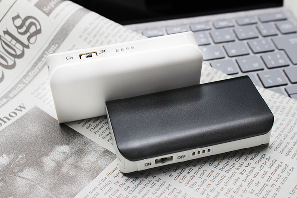

赤外線照射ランキング

金木犀の香りがすると、秋だなぁとしみじみ感じます。
なかなかお天気にならない9月でしたが、皆様いかがお過ごしでしょうか？
朝晩と昼間の気温差が大きくなってきました、風邪にはくれぐれもご注意ください！
今回のブログでは【小型カメラ、隠しカメラ専門店】である当店の商品の中でも
特に需要の高い機能である≪赤外線≫の能力が高い製品を、ランキング形式で３種類ご紹介いたします！
小型カメラではなかなか暗所を撮影することは難しいのですが、
超強力な赤外線を搭載したモデルもございますのでお楽しみに！
それでは、ご覧ください＾＾！
赤外線照射ランキング 第３位！
腕時計型「ＳＰＷ－ＳＩシリーズ」
※画像右からSPW-SIBL,SPW-SIWL,SPW-SIWM,SPW-SIBM
腕時計型カメラの中で一番人気の当店オリジナルモデル！
約17mm程と薄い本体に超強力な赤外線を搭載しています！！
赤外線LEDは4つ搭載されており、そのうちの2つは不可視、2つは強力な可視タイプ。
(可視タイプは、うっすらと赤く光りますが強力なタイプのLEDとなっています)
赤外線照射距離は、当店取扱製品の中でも最高峰の5m程。
勿論、腕時計型カテゴリーの中では最も強力な製品でございます！
赤外線を使用しなくても、強力な暗視補正機能が搭載されているので、
ある程度の暗さ(最低照度0.3Lux)までは通常撮影でもきれいに撮影する事が可能です！
高画質720Pに対応し、防水機能も搭載されておりますので、暗所だけでなく様々なシーンで活躍いたします。
腕時計型のような身に着けるタイプの商品ならではの、アクティブな撮影もオススメです・・・！
SPW-SIシリーズの詳細はこちら↓ ↓
≪ SPW-SIBL（黒皮） ≫ ≪ SPW-SIBM（黒銀） ≫
≪ SPW-SIBL（白皮） ≫ ≪ SPW-SIBM（白銀） ≫ ≪ SPW-SIWC（白丸） ≫
赤外線照射ランキング 第２位！
モバイルバッテリー型「ＳＰＭＢ－ＩＨＳＭ」
超強力赤外線＋強力暗視補正機能を搭載！
外でもお部屋でもどこにあっても違和感のないモバイルバッテリー型カメラが第2位！
赤外線照射距離は約5mと強力タイプ！
カメラを挟むよう赤外線LEDを2ヶ所搭載している為、赤外線照射の範囲が広くなっている事も特長の一つです。
また、超強力な赤外線を搭載しておりますと、赤外線LEDがうっすらと赤く点灯しますが、
当製品は不可視仕様になっており、赤外線を照射しても発光する事はありません。
赤外線の赤い光で撮影の邪魔をされることが無いのもうれしいポイントです。
勿論、実際にモバイルバッテリーとしても使用が可能なので、
カメラとしても充電器としても使える一台二役のお得な製品です♪
SPMB-IHSMの詳細はこちら↓ ↓
≪ SPMB-IHSM ≫
赤外線照射ランキング 第１位！
モバイルバッテリー型「ＳＰＭＢ－ＩＨＳＢ,ＩＨＳＷ」

どんな暗闇にも対応するモバイルバッテリー型カメラ！暗闇を撮影するなら
このモデルで間違いなし！当店が誇る最強高スペックモデル！
コンパクトながら、赤外線照射距離は約5～7mと超強力！
赤外線モードをONにしますと赤く点灯する可視タイプですが、搭載位置が奥の方に設計されていますので、
LEDを真正面から確認しませんと視認出来ないようになっております。
そして勿論、赤外光自体は見えませんので、撮影の邪魔になる心配もありません！
当店で最も強力な赤外線機能を持つ「SPMB-IHSB,IHSW」を使用して実際に撮影した映像も是非ご確認下さい。
この映像をご覧頂ければどれだけ強力な赤外線を照射しているか、お分かりいただけるかと思います。
優れているのは赤外線機能だけではありません！
本体には大容量のバッテリーとぉ搭載しており、バッテリーのみで連続約8時間の撮影が可能！
赤外線を照射しながらの撮影を行いましても、連続で約4時間程撮影を続けることが出来ます。
充電しながらの撮影も可能ですので、長時間撮影したい方にオススメの商品となっております！
また、プログラム調整機能により、解像度や彩度などの10項目を用途に合わせて調節が可能！
例えば「1280×720P 60fps」に設定をしますと、高速な被写体でもスムーズに撮影する事が出来ますので、ドライブレコーダーとして使用するのにもピッタリです！
SPMB-IHSB,IHSWシリーズの詳細はこちら↓ ↓
≪ SPMB-IHSB（黒） ≫ ≪ SPMB-IHSW（白） ≫
如何でしょうか・・・？
赤外線機能を搭載していても、「可視タイプ」、「不可視タイプ」とあり、
商品によってその他の搭載機能も様々ですので、ご使用になる用途に合わせて商品を比べてみてください♪
当店ホームページの絞り込み検索にて、「赤外線の種類」の項目にチェックを入れますと、
赤外線照射機能を搭載した商品一覧が表示されますので、ご参考までにご覧頂ければと思います！
暗闇を感知すると自動で赤外線を照射する商品などもございますので、ぜひこの機会にご検討下さい…！
当店HPはコチラ↓↓からご覧いただけます！
【ＳＰＹ－ＯＮＬＩＮＥ－ＳＨＯＰ】

ご相談・ご質問はこちらから!!（店舗サイトのお問合せページへ飛びます）
mail：shop@spy-online.jp
tel：042-719-3319 (対応時間10：00～12：00、13：00～17：00)
今回はこの辺で…
またお会いしましょう(^_^)/~